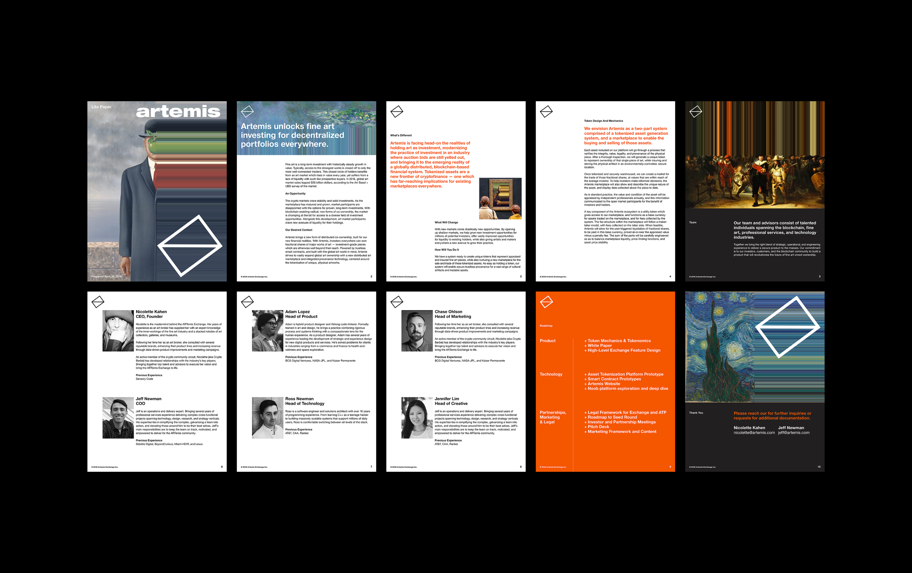
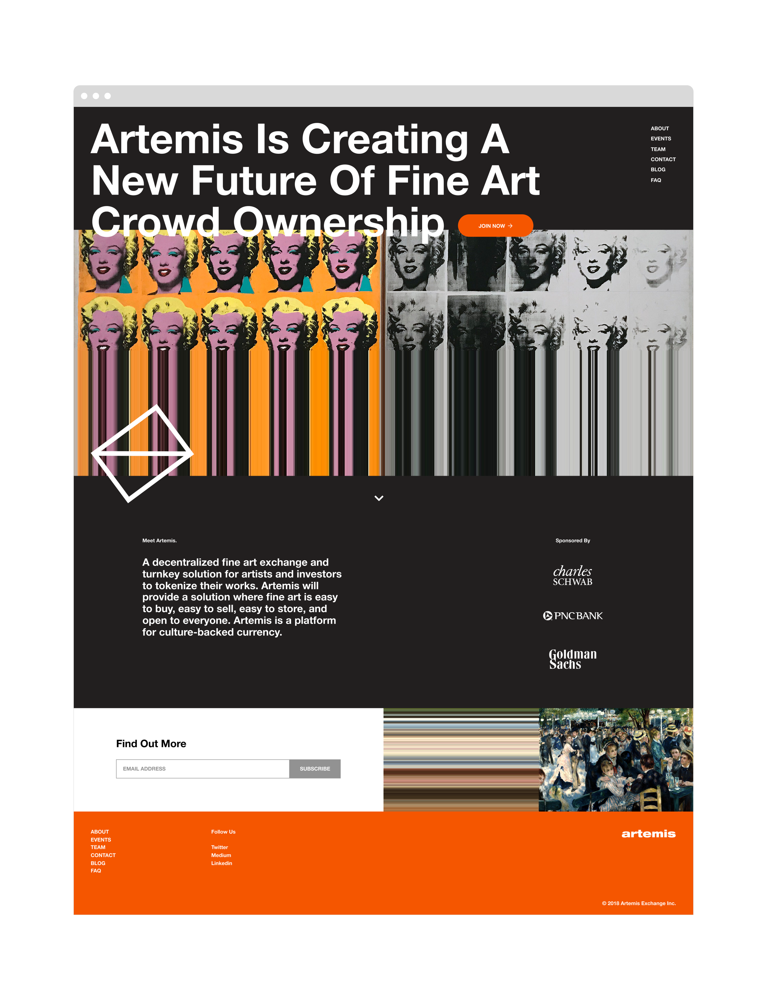

Artemis was born out of the belief that fine art ownership should be accessible to everyone and not just a select few, with cryptocurrency as the perfect avenue to grant this access. The goal was to challenge the art world's status quo and make "art for everyone."
In order to attract funding for the startup, the Artemis team needed an effective strategy and a complete brand identity to make the company stand out to potential investors. Working within a tight time frame, we explored the concept of disruption — combining famous historical paintings with digital effects. Through multiple design sprints, we delivered a brand kit that could easily be expanded upon as needed.
head of creative: Jennifer Merrell
art director: Jesse Merrell

